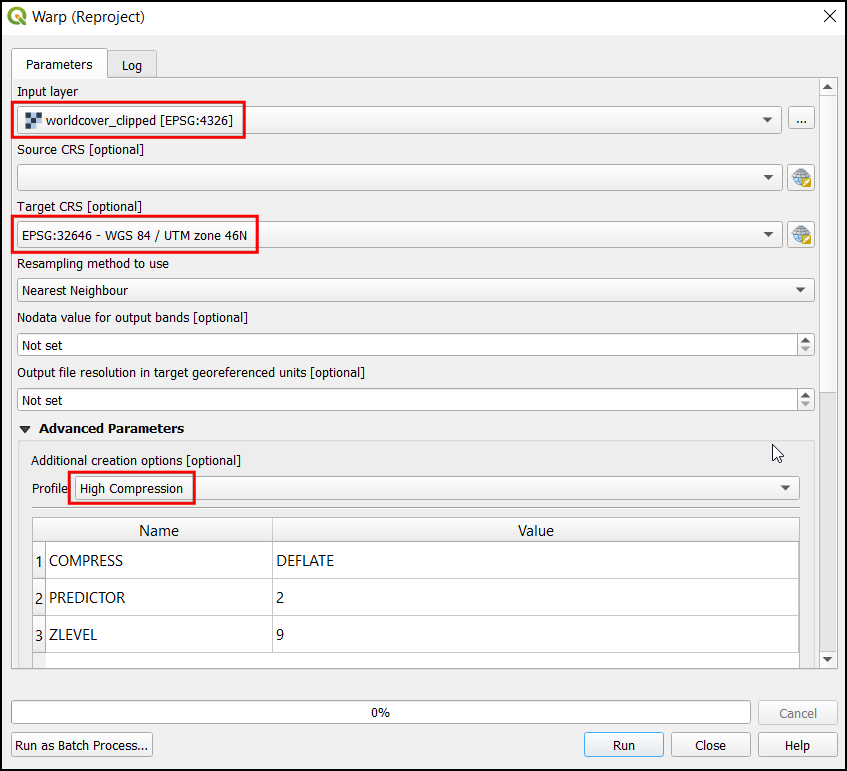
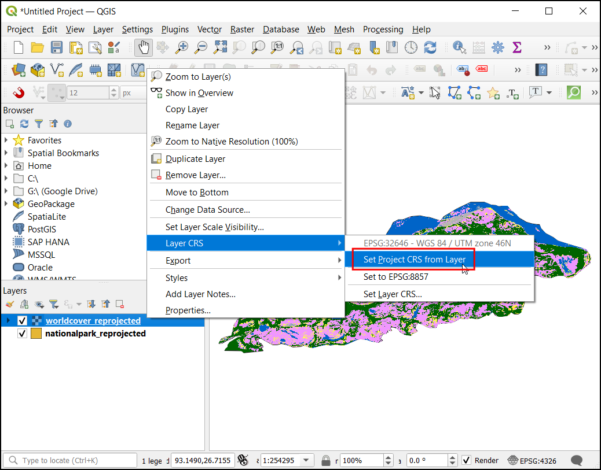
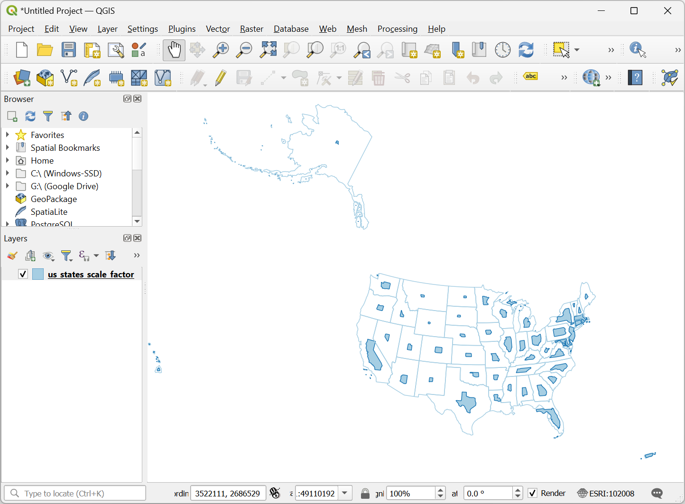
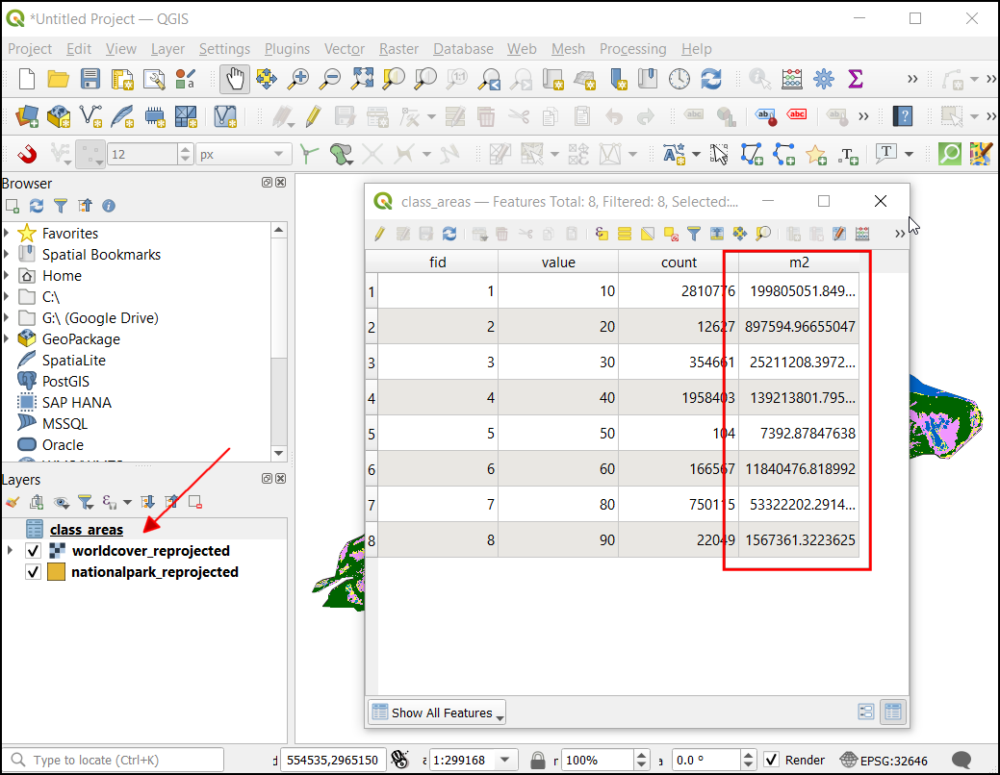
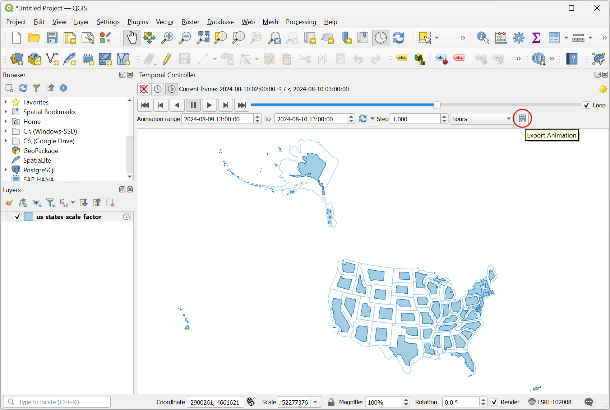
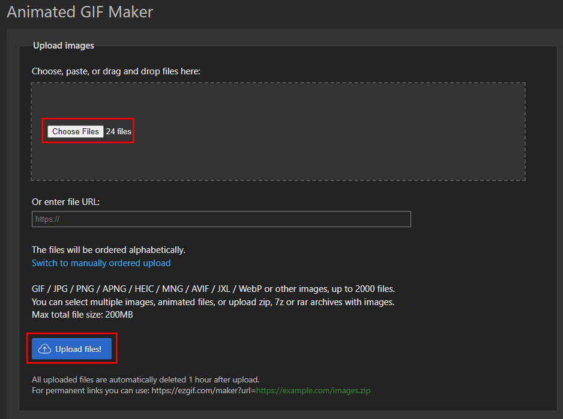
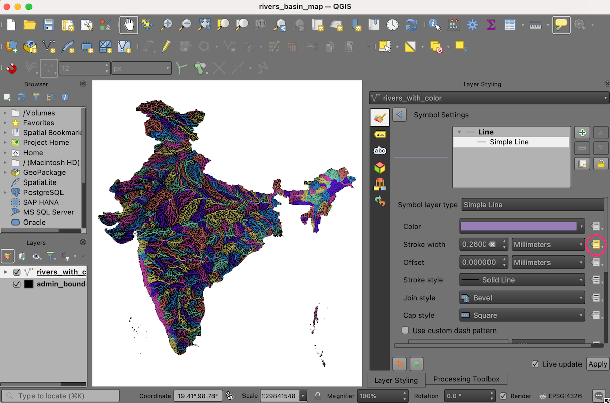
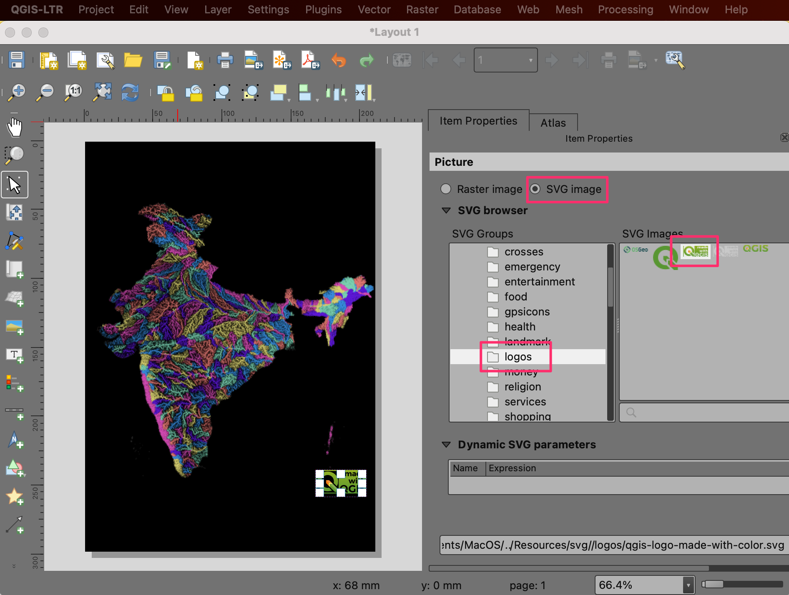

Creación de un mapa de cuenca fluvial coloreado (QGIS3)¶
En este tutorial, aprenderemos el flujo de trabajo de QGIS para crear mapas fluviales artísticos de tu propio país o región utilizando datos hidrológicos de libre acceso.
Nota
Este tutorial está inspirado en los hermosos mapas producidos por Grasshopper Geography. Yo tengo uno de sus grabados y tú también puedes apoyar su trabajo comprando uno de sus mapas en su tienda en-línea <https://www.etsy.com/shop/GrasshopperGeography>`_.
Visión general de la tarea¶
En este tutorial, tomaremos capas de datos de cuencas y ríos de HydroSHEDS y crearemos un mapa de cuencas para los ríos de la India.

Otras competencias que aprenderá¶
Cómo asignar proyección a una capa vectorial con proyección incorrecta o ausente.
Cómo añadir varias capas en un mismo GeoPackage.
Cómo añadir una insignia “Hecho con QGIS” a su mapa.
Obtener los datos¶
HydroSHEDS proporciona conjuntos de datos hidrológicos globales adecuados para aplicaciones regionales y globales. Las capas de datos se derivan de MDE condicionados hidrológicamente a partir de SRTM.
Límites de las cuencas¶
HydroBasins proporciona límites poligonales de cuencas para diferentes continentes. Los límites son jerárquicos: cada cuenca de Nivel N se subdivide a su vez en cuencas más pequeñas de Nivel N+1. Para este tutorial, utilizaremos los límites de cuenca del Nivel 6. Puede utilizar un nivel diferente en función de sus necesidades. Puede utilizar un nivel diferente en función de su región y del tipo de mapa que desee crear. Visite la página HydroBASINS y descargue el archivo zip correspondiente a su región.

Nota
Los límites de cuenca de HydroSHEDS se derivan de los datos SRTM, que en este momento tienen más de 20 años. Los límites de las cuencas pueden no coincidir con los límites oficiales de las cuencas de su región. Puede sustituir los datos de HydroBasins por polígonos de fuentes oficiales cuando estén disponibles.
Red fluvial¶
HydroRIVERS proporciona un archivo shape línea que representa la red fluvial. Visite la página HydroRIVERS y descargue el archivo zip correspondiente a su región de interés.

Límites administrativos¶
Recortaremos los datos de HydroSHEDS a los límites de la región elegida. En este tutorial, queremos crear un mapa de cuenca fluvial de la India, por lo que obtendremos el archivo shape de límites de Survey of India. Visite la página Outline Maps of India y descargue el formato vectorial de límites internacionales de la India. Si necesita los límites administrativos de otros países o estados, puede obtenerlos de GADM o geoBoundaries.

Una vez descargados todos los archivos, descomprímalos y cópielos en una carpeta. Ahora debería tener 3 archivos shape: hybas_as_lev06_v1c.shp, HydroRIVERS_v10_as.shp y admin boundaries polymap15m_area.shp.

Fuentes de datos: [HYDROSHEDS], [SOI]
Procedimiento¶
Abra QGIS y localice los archivos descargados en el Navegador de QGIS. Arrastre y suelte
hybas_as_lev06_v1c.shpyHydroRIVERS_v10_as.shpal lienzo.

Localice el archivo shape de límites administrativos
polymap15m_area.shpy arrástrelo y suéltelo en el lienzo.

Las capas de datos HydroSHEDS tienen algunos objetos espaciales con geometrías no válidas. Vamos a arreglarlas procediendo más adelante. Abra la caja de herramientas de procesado desde . Busque y localice la herramienta . Haga doble clic para ejecutarla.

Nota
Puede consultar el tutorial Manejar Geometrías No Válidas (QGIS3) para obtener más información sobre las causas y soluciones de las geometrías no válidas.
Seleccione
hybas_as_lev06_v1ccomo Capa de entrada`. Haga clic en el botón … situado junto a Geometrías corregidas y seleccione Guardar en GeoPackage….

Busque la ubicación donde desea guardar los datos de salida e introduzca el nombre
data.gpkg. Haga clic en Guardar. Se le pedirá que introduzca un Nombre de capa`. Introduzcabasins_fixed. Haga clic en Aceptar. A continuación, haga clic en Ejecutar para ejecutar el algoritmo y generar la capa de salida.

Repita el paso para la capa
HydroRIVERS_v10_as. Seleccione el mismo GeoPackagedata.gpkgque se creó en el paso anterior. No se preocupe si recibe un mensaje indicando que el archivo se sobrescribirá. QGIS no sobrescribirá el archivo, sino que añadirá una nueva capa al mismo GeoPaquete. Esta vez utilicerivers_fixedcomo Nombre de la capa.

La capa
polymap15m_areaviene con una proyección que no es reconocida por QGIS. Vamos a asignar una proyección conocida a esta capa. Busque y localice la herramienta y haga doble clic para abrirla.

Nota
Recuerde que la herramienta Asignar proyección no reproyecta la capa sino que simplemente añade la información de proyección correcta a una capa georreferenciada existente con proyección ausente o incorrecta. Utilice la herramienta Reproyectar capa si desea cambiar el SRC de una capa.
Seleccione
polymap15m_areacomo Capa de entrada. Haga clic en el botón Seleccionar SRC y busque la proyecciónEPSG:7755 - WGS 84 / India NSF LCCy selecciónela. Haga clic en el botón … situado junto a SRC asignado` y seleccione Guardar en GeoPackage….

Seleccione el mismo GeoPackage
data.gpkge introduzca el nombre de la capaadmin_boundary_fixed. Haga clic en Ejecutar.

Ahora tendrá 3 nuevas capas
basins_fixed,rivers_fixedyadmin_boundary_fixedcargadas en el panel Capas` de QGIS. Mantenga pulsada la tecla Mayús y seleccione todas las capas restantes. Haga clic con el botón derecho y seleccione Quitar capa….

Ahora recortaremos las capas de cuencas y ríos al límite administrativo. Busque y localice la herramienta de la Caja de herramientas de procesos. Haga doble clic para abrirla.

Seleccione
basins_fixedcomo Capa de entrada yadmin_boundary_fixedcomo Capa de superposición`. Guarde el resultado en el mismo GeoPackagedata.gpkgque la capabasins_clipped. Haga clic en Ejecutar.

Una vez finalizado el procesamiento, repite el proceso con la capa
rivers_fixedcomo Capa de entrada`. Guarde el resultado en el mismo geopackagedata.gpkgque la caparivers_clipped. Haga clic en Ejecutar.

Ahora tendrá 2 nuevas capas
basins_clippedyrivers_clipped, así como la capaadmin_boundary_fixedcargada en el panel Capas en QGIS. Mantenga pulsada la tecla Mayús y seleccione todas las capas restantes. Haga clic con el botón derecho y seleccione Quitar capa….

Antes de continuar, vamos a guardar el proyecto. QGIS permite guardar un proyecto dentro de un GeoPackage - lo que resulta muy cómodo para evitar la gestión de archivos adicionales. Vaya a .

En el cuadro de diálogo Guardar proyecto en GeoPackage, haga clic en el botón … situado junto a Conexión y busque el archivo
data.gpkgexistente. Introduzca el nombrerivers_basin_mapcomo nombre del Proyecto. Haga clic en Aceptar.

Once saved, you can expand the
data.gpkgin the Browser panel and see that the QGIS project is now saved inside the GeoPackage. Users of this GeoPackage can now open the project directly from the GeoPackage.

To create our colorized map, we need to color all the basins such that no adjacent basins have the same color. QGIS has a tool to do just that. Open the tool from the Processing Toolbox.

Select
basins_clippedas the Input layer. Leave other options to their default values. Save the output to the same GeoPackagedata.gpkgas the layerbasins_with_color. Click Run.

Once the processing finishes, a new layer
basins_with_colorwill be loaded to the Layers panel. Right-click the layer and select Open Attribute Table. You will notice that the layer has a new attribute namedcolor_idwith an integer value. Assigning a unique color to each integer value will result in topolocal coloring of the layer.

We want to transfer the color id for the basin to all the rivers contained within it. Open the tool from the Processing Toolbox.

Here we want to select
rivers_clippedas the layer to Join to features in andbasins_with_coloras the layer for By comparing to. In the Fields to add section, click the … button and select thecolor_idfield. Save the output to thedata.gpkggeopackage as the layerrivers_with_color. Click Run.

Once the processing finishes, a new layer
rivers_with_colorwill be loaded to the Layers panel. Now it is time to apply the symbology. Select theadmin_boundary_fixedlayer and click the Open Layer Styling Panel button in the Layers panel. Change the color to black.

Next, select the
rivers_with_colorlayer and select theCategorizedrenderer.

Select
color_idas the Value and click Classify. You will see the rivers in different basins will be assigned a different color.

Nota
If you are not happy with the randomly chosen colors, you can click the Symbol for individual values in the list below and choose your own color.
The default lines are too thick for our map. Let’s change it. Hold the Shift key and select all the symbols in the list. Click the Symbol to open the Symbol Settings.

Click on Simple Line and change the stroke width to
0.1. The map will look much better now.

We can improve the map by assigning different widths to the rivers based on their size. The
rivers_with_colorlayer has a fieldORD_STRAcontaining the value of the Strahler Order of the river. The larger the number, the bigger the river. We will use the Assistant to help us use the value of the strahler order to an appropriate stroke width. Click the Data defined override button next to Stroke width and select Assistant….

In the Input section, select the
ORD_STRAfield as the Source with Values from1to to6. In the Output section, choose Size from as0.05and to as0.2. The map will update dynamically as you enter the values. You may have to adjust these values depending on your region. Once you are happy with the map, click the Back button.

You will notice that the Data defined override button for Stroke width is now yellow, indicating an active override has been applied to this setting.

Our colorized river basin map is now ready. Let’s put this map in a layout so we can export a high-resolution version with other map elements. Go to . When prompted to enter a name, leave it blank and click OK.

In the Layout 1 window, right-click on the blank canvas and choose Page Properties….

Choose
A4as the Size. Change the Background color to black.

Go to .

Hold the left mouse button and select a region on the canvas where you want the map to be placed.

Once the map appears, scroll down in the Item Properties tab and turn off the Background.

Nota
If you do not see the Item Properties tab or close it by accident, you can get it back by going to in the Layout menu.
Let’s adjust the map extents. Click on the Interactively Edit Map Extent button and then use the mouse to pan the map. You can also use your scroll wheel to adjust the zoom. If you want more finer control on the Zoom, adjust the Scale value manually. Repeat till you are happy with the map placement.

Next we will add a QGIS logo to the map. Go to .

Draw a rectangle where you want to place the logo. In the Item Properties dialog, locate the logos icon group. Select the
Made with QGISlogo.

Next, we will add a label with data credits. Go to . Enter the text for data credits and adjust the font and label alignment.

Once you are ready to export the results, go to . Browse to a folder on your computer where you want to save the PNG image and enter the name
river_basins.png.

Choose
300 dpias the Export resolution and click Save.

Once the export finishes, you will have your final map image at the chosen location.

Here’s the final PNG image that we created using QGIS and open datasets.

If you want to give feedback or share your experience with this tutorial, please comment below. (requires GitHub account)